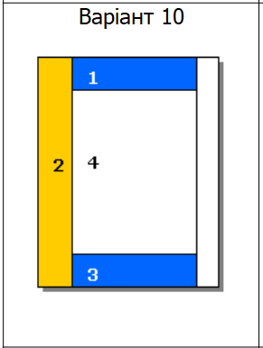
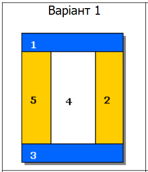

Завдання: засобами HTML та CSS створити окремі веб-сторінки, а саме:
1. Розмітку за допомогою таблиці (Варіант №10):
- Фіксована таблична верстка;
- Гумова таблична верстка.
2. Розмітку за допомогою блоків (плаваючих елементів) (Варіант №1):
Фіксована блокова верстка;
Гумова блокова верстка.
